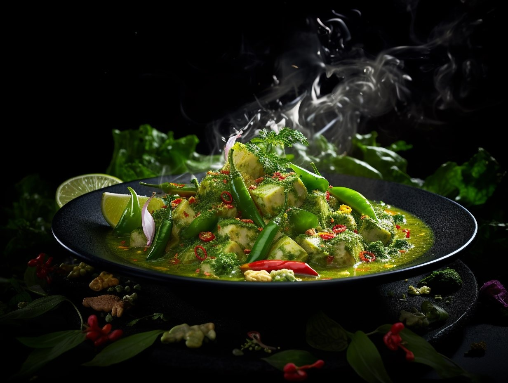

Top 3 Thai foods
1. Pad Thai:
An iconic Thai dish, Pad Thai is usually made with flat rice noodles, combined with seafood (or chicken or pork), egg, sauces and vegetables such as bean sprouts and shallots, served with a sprinkle of fresh herbs, chilli and roasted peanuts (optional). This dish is a delicious balance of salty, sweet and sour.

2. Tom Yum Goong:
An iconic dish from the central region, this clear soup boasts an extravagant combination of shallots, lemongrass, mushroom, red chili peppers, lime juice, galangal, and fish sauce. Although shrimp (known as Goong) is the most common main ingredient, other variations include chicken, mixed seafood, or fish. This is a spicy speciality, however, there is a milder alternative for people who aren’t fond of spicy food. The Thai chicken soup is much milder, with a sweet and creamy tone, yet with the same sublime spices and flavours.

3. Kaeng Lueang
Known for its delicious range of curries from the mild to the explosive, there are a wide range of regional curry variations, however, there are three main types of Thai curry. The colour of yellow curry comes from the generous use of turmeric which is ground with classical aromatic ingredients such as cumin, coriander, lemongrass and shallots to create a rich texture. Potatoes, vegetables and coconut milk are added, along with chicken, or an alternative protein or tofu. Of the three main curry types, yellow curry contains the least chillies, therefore it has the mildest taste.
